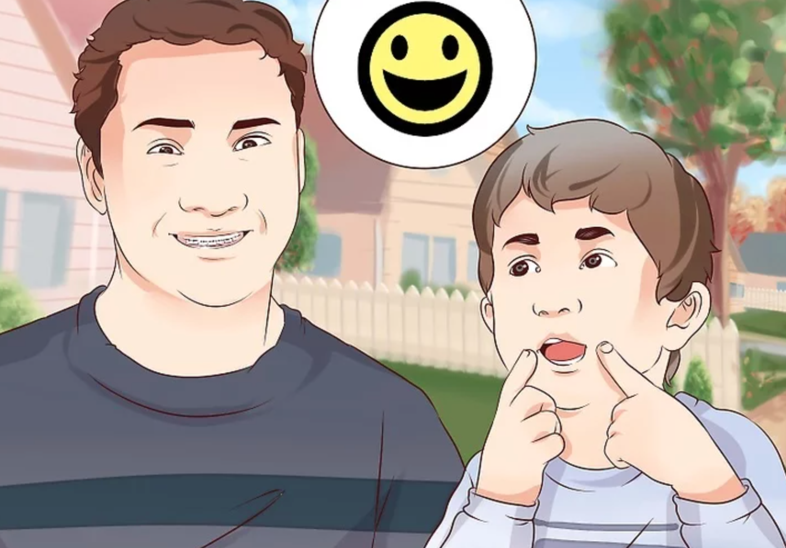
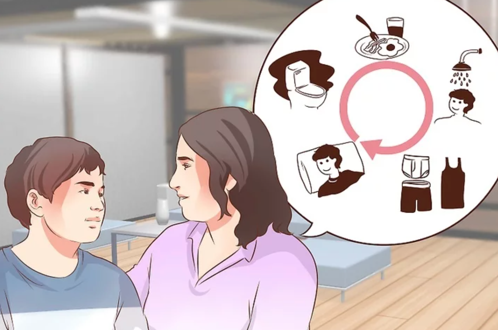
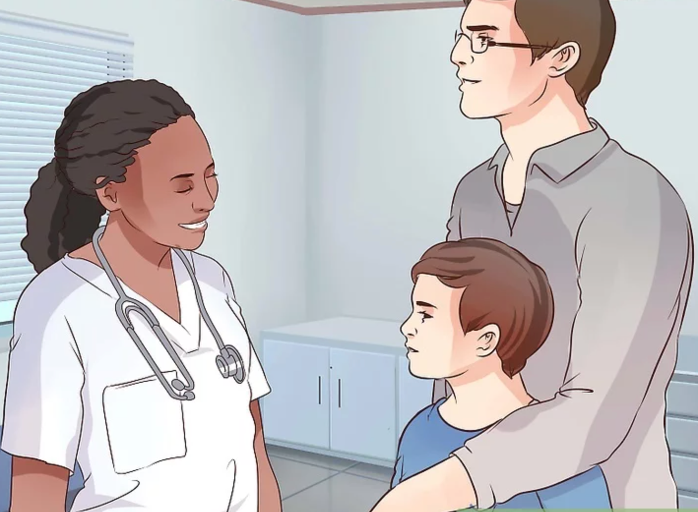

I tried to heal autistic children with the magical and incentive power of music. Being aware of the School of Autistic Children near my high school, I held regular charity performances with my band in our community to raise funds for them. At the same time, we taught them how to play various instruments, including drums and guitar.
Hoping to encourage them through my music, I was always trying to play songs with healing power, such as See You Again by Wiz Khalifa. Following their subtle reactions like shaking bodies slightly, I changed my beating force, rhythm, and even facial expressions. As time passed, I surprisingly found that they could read my passionate drums, represented by their increasing interactions with me and my performance - one little boy even ran to me and free-styled a song to accompany drumbeats.
Every time when immersing in the same music with these lovely children, I felt like we communicated with each other through eye contracts and body movements, in which I delivered my sincere encouragement to them.
Way 1: Encourage Communication

A form of AAC (such as picture exchange, sign language) that will allow autistic children to express themselves may be helpful. Being able to communicate needs, thoughts, and feelings can reduce frustrations and meltdowns in autistic children.
Watch for nonverbal responses. For example, if you ask "Did you have fun at preschool?" and your child flaps their hands and shrieks happily, then this is their answer. Continue maintaining a dialogue.
Don't pressure autistic children to speak. Some autistic people are incapable of speaking, or they find it difficult and stressful. Allow the child to communicate through gestures, sign language, or by pointing to a picture board.
Way 2: Provide a Consistent and Soothing Environment

Maintaining consistency helps your child to find routines, rituals, and a concept of order in what is otherwise perceived as chaos. Your child may have a hard time understanding how the world works around him or her. It will help both your child and you to write down a specific schedule of the day (such as tooth brushing at a certain time or after a given event like eating) and then to follow it when possible.
An example of a beginning routine (schedule*) outlined below.
Wake up.
Use bathroom.
Wash hands and face.
Come downstairs and get in chair.
Have a nice breakfast.
Put plate in sink after eating.
Watch child oriented TV program.
Way 3: Go To The Doctor Regularly

Some autistic children cannot tell you if their tummy hurts or if their ear aches. Other autistic children don't understand the sensations their body is telling them and may not realize that they are sick. Keep an eye on your child's behavior. If you sense something unusual in the child's health, ask them how they are feeling (as sometimes that prompts them to think hard and realize something as wrong), and call your GP immediately if you believe they are ill.
For example, Self-injurious stimming may signal a health issue. For example, autistic children might head-bang when they have tooth pain.